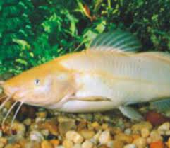

Jundiá:
O peixe Jundiá representa 11 espécies do gênero Rhamdia, sendo um peixe de couro e de água doce. Descrição:
Sendo assim, uma característica que diferencia os animais desta espécie é sua coloração. Com o padrão de cores entre o marrom e o bege, o peixe tem formas irregulares de manchas, como as manchas de uma onça pintada. De outra forma, em sua parte inferior da cabeça a pigmentação varia. Além da coloração, você pode identificar esta espécie pelos grandes barbilhões que lhe servem como órgão sensitivo e sua cabeça achatada. O maxilar superior do peixe, também costuma ser mais longo do que o inferior. Também é possível conferir no bicho uma longa nadadeira adiposa e um espinho serrilhado, em ambos os lados, em sua nadadeira peitoral. Pesca:
Para a pesca do jundiá é utilizado vara pesada com linhas acima de 40Lb, e os anzóis devem ser maiores que 9/0, empatados em aço flexível e chumbado conforme a necessidade do local.
| Jundiá |
|  |
| Tamanho: 1 m Peso: 10 kg |
Email:Chssilva1419@gmail.com